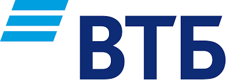
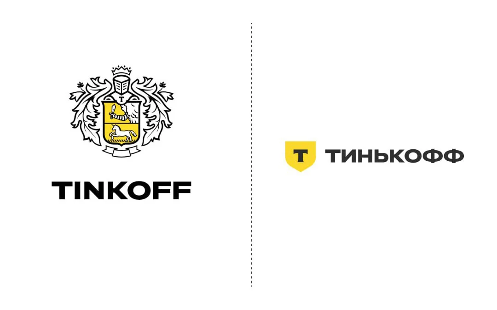
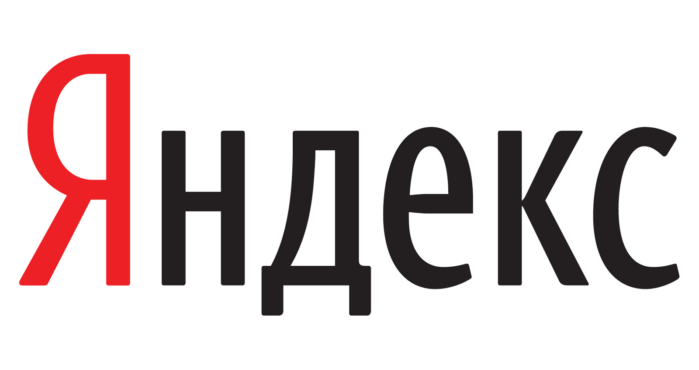
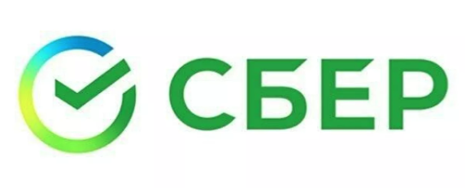

Наши главные организаторы

ВТБ — один из крупнейших банков России. Партнер хакатонов с самого основания проекта.

Тинькофф — технологичная финтех-компания, активно поддерживающая ИТ-сообщество.

Яндекс — лидер в сфере интернет-сервисов. Регулярно организует крупнейшие хакатоны.

Сбер — мощный технологический партнер, развивает направления AI и DevOps.

МегаФон — телеком-гигант, спонсор инновационных проектов и хакатонов по всей стране.